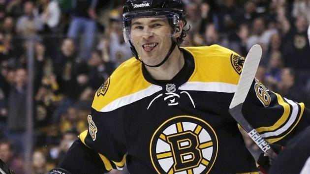

Dne 2. dubna 2013 byl vyměněn do Boston Bruins za duo mladíků Lane MacDermid a Cody Payne spolu s dvěma volbami v draftu 2013. Jágr se tak po několika měsících v Dallasu vrátil do východní konference. V novém působišti se setkal mimo jiné i s krajanem Davidem Krejčím a se slovenským obráncem Zdenem Chárou, který je kapitánem mužstva. S mužstvem došel až do finále Stanley Cupu, kde tým nestačil na Chicago Blackhawks, se kterým prohrál 2:4 na zápasy. Po konci sezony už mu vedení Bruins nenabídlo prodloužení smlouvy a Jágr si musel hledat nové angažmá.
